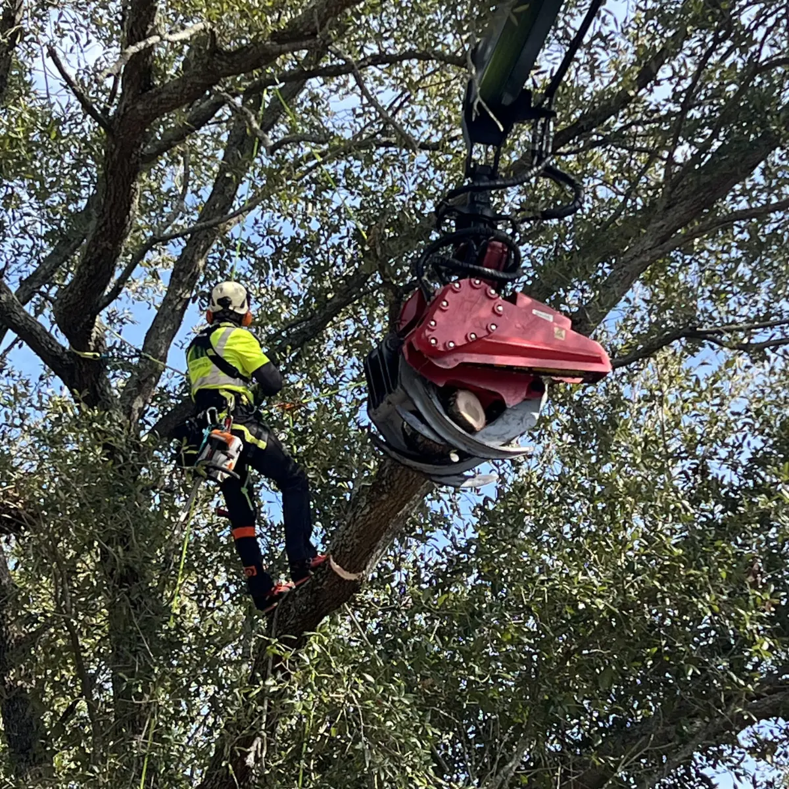

Stump Grinding Services in New Orleans, LA
Urgent or unsafe? Call (504) 732-0779


Expert Arborist Services Tailored to You
Tree stumps left behind after tree removal can quickly become a safety hazard, a maintenance issue, and a long-term problem for property owners. In New Orleans, where moisture, heat, and pests are constant factors, exposed stumps often lead to regrowth, insect infestations, and uneven ground that interferes with landscaping or construction plans.
At A Perfect Cut Tree Service, we provide professional stump grinding services across New Orleans, Metairie, Kenner, and surrounding areas. Our approach removes stumps efficiently and safely while protecting nearby structures, utilities, and soil conditions. Every job is handled by experienced professionals using specialized equipment designed for residential and commercial properties.
Stump grinding is the most effective way to eliminate unwanted stumps without the disruption of full excavation. It restores usability to your outdoor space and prevents future issues caused by decaying wood beneath the surface.

Why You Should Invest In Stump Grinding Services?
Protecting and preserving trees should always be of the utmost concern. However, at times, trees must be cut down for one reason or another. When that happens, the next logical step is to get rid of the stump. Leaving a stump can lead to a host of problems. Let’s first look at the many reasons why you should consider stump grinding instead of leaving the stump as is.

New Growth Is Possible
If you cut down the tree, then it is very likely that you don’t want a tree in that area. If you leave the stump as it is without stump grinding, then it could contribute to new tree growth. Not that the stump itself is going to grow back into a full tree.
An idle stump often contributes to new sprout growth. These sprouts are small and may grow around the remaining stump area. Their roots can spread through the ground and sap the nutrients from other plants or trees you have in the area. Getting rid of multiple sprouts can prove to be a costly business once enough time has passed.
New shoots may come back after removing the sprouts for the first time. A chemical solution may be the only way to get rid of the small trees for good. Of course, an even better option is to grind down and remove the stump before it can contribute to new sprout growth.

A Stump Can Be Hazardous
Another reason why you might consider using a tree stump removal service is because tree stumps can prove to be a real hazard. These small, often hidden, stumps can be dangerous to adults and children alike. This is especially true if kids spend any amount of time running and playing in your yard.
Adults can just as easily trip and hurt themselves. If a worker or neighbor were to trip and hurt themselves in your yard because of a stump, then you may be liable for any damages. That means you could end up paying for expensive hospital bills. The cost of stump grinding is much easier to deal with.
There’s also the possibility that you’ll run into the tree stump while you are mowing the lawn. This will surely damage the mower and could even harm you if the blade were to come loose or get lodged in the stump.

Inviting Pests To Plague Your Home
Do you like the idea of ants, beetles, or termites running through your home? Hopefully not. Unfortunately, all of the insects above are going to be attracted to a slowly rotting tree stump. A hotel they can eat from the inside out in the case of the termites.
Sure, they’re only in the tree stump, and wouldn’t that help the stump degrade faster? Sooner or later those bugs will migrate to the home. Then you have ants and termites eating away at the foundation of the house, the walls, and the roof framework.
The cost of repairing this damage and removing the pest can be tremendous. The cost of grinding a single stump is barely a drop in the bucket in comparison. It’s hardly a decision worth considering.

They’re Unsightly And Waste Space
The final reason to consider a stump grinding service is simply that you don’t want a useless stump in your yard. For starters, there is nothing aesthetically pleasing about a stump. It gets even worse as it starts to rot and decay. If you take landscaping seriously, then you are probably ready to get rid of those unsightly stumps ASAP.
Not only do these stumps not look great, but they are also wasting a lot of valuable space. That’s space in your yard you could place a bench, a swing, a fountain, a bush, or anything other than a stump. Other items are going to increase the value of your home while a stump is going to do exactly the opposite.
It’s A No-Brainer.
Trees are worth protecting. Stumps, on the other hand, are usually just in the way. They are potential hazards, they take up useful space, and they can invite a swarm of pests into your home. If the tree is gone, then the stump should be gone as well.

Is Stump Grinding Safe Near Homes and Utilities?
Yes, when performed by trained professionals. Stump grinding is a controlled process that avoids pulling or uprooting roots that could affect foundations, sidewalks, or underground lines.
Before grinding, we:
- Identify visible utility markers
- Assess proximity to structures
- Adjust grinding technique to minimize vibration and impact
This is why stump grinding should never be treated as a DIY task.

Complete Stump Grinding & Removal for a Clean, Safe Yard
At A Perfect Cut Tree Service, stump grinding isn’t just about removing what’s left behind, it’s about reclaiming your space safely, cleanly, and efficiently. Here’s how we do it:
- On-site assessment, We evaluate the stump’s location, size, and proximity to structures, utilities, or landscape features.
- Precision grinding, Using specialized, professional-grade equipment, we grind the stump well below surface level to prevent regrowth and make space usable again.
- Root minimization, We reduce the surrounding surface roots when needed to avoid future bumps or landscaping issues.
- Full cleanup, We clear the wood chips and debris or leave them neatly piled for mulch if you prefer.

Contact A Perfect Cut Tree Service for Stump Grinding in New Orleans!
Don’t let a stubborn stump ruin your landscaping. Trust A Perfect Cut Tree Service for efficient and effective stump grinding services in New Orleans. Our state-of-the-art equipment and experienced technicians will have that unwanted stump removed in no time. Say goodbye to unsightly stumps and hello to a beautiful yard. Book your stump grinding appointment today. Contact us now!
Service Areas
- Stump grinding in New Orleans, LA
- Stump grinding in Metairie, LA
- Stump grinding in Kenner, LA
- Stump grinding in River Ridge, LA
- Stump grinding in Harahan, LA
- Stump grinding in Destrehan, LA
What to Photograph From a Safe Distance
Photos and video show us the tree, the property around it, how we would reach it, and any visible hazards.


Tree down or a limb on a line?
Skip the photos and call. Calls are answered 24/7.
(504) 732-0779Office hours: Monday to Friday 7 AM to 5 PM, Saturday 7 AM to 3 PM, closed Sunday.
Other Tree Care Services

Tree & Shrub Pruning
We trim trees and shrubs to promote healthy growth, improve appearance, and reduce the risk of damage from overgrown limbs.
Get My Arborist Review
Tree Trimming
Our tree trimming service enhances tree health, improves curb appeal, and reduces risk by removing dead or overgrown branches with precision and care.
Get My Arborist Review
Tree Preservation
We protect mature and valuable trees through root zone care, pruning, and soil management to ensure longevity and vitality.
Get My Arborist Review
Ready to Show Us Your Tree?
Show us the tree. An arborist reviews what you send. Photos give us a first look. Some trees need an in-person visit before we can make a final recommendation.